God Hand (ゴッドハンド, Goddo Hando) adalah permainan video action
beat 'em up yang dikembangkan oleh Clover Studio dan diterbitkan oleh
Capcom untuk konsol permainan PlayStation 2. Permainan ini
disutradarai oleh desainer Resident Evil Shinji Mikami, dan dirilis di
Jepang dan Amerika Utara pada 2006 dan pada 2007 untuk wilayah PAL;
pada 4 Oktober 2011, permainan ini dirilis ulang untuk PlayStation 3
sebagai title dapat diunduh di PlayStation Network. Mikami ini adalah
untuk menciptakan sebuah permainan Aksi yang ditujukan untuk "
hardcore gamers " intermixed dengan sejumlah besar comic relief.
Permainan ini menerima respon positif dari kritikus dan dirilis di
Jepang terjual wajar. Ini adalah permainan video terakhir Clover
Studio.
Tingkat Kesulitan
God Hand memiliki sistem level yang terus berubah tergantung dari gaya
bermain playernya.Semakin baik playerrnya bermain (tanpa menerima damage
dan memberikan damage beruntun ke lawannya) maka akan lebih cepat naik
level dan mendapatkan hadiah seperti gold lebih banyak.urutan levelnya
di mulai dari level 1 sampai level DIE
Penjelasan Level
Level 1-Musuh menjadi sangat lemah
Level 2-Musuh mulai menangkis serangan
Level 3-Musuh mulai sedikit agresif
Level DIE-Musuh menjadi sangat agresif dan meningkatkan damage serangan
Plot
Dalam latar cerita game, ada Malaikat yang jatuh menjadi Raja Iblis
Angra, dia mememrintahkan pasukan iblisnya menginvasi dunia. Namun,
seorang pria yang memegang kekuatan Tuhan dalam pelukannya mengalahkan
Angra, mengirimnya ke pengasingan sekali lagi. Pria itu kemudian diberi
gelar "God Hand" oleh orang-orang yang dia selamatkan. Sebuah klan
manusia yang didirikan untuk melindungi God Hand seperti yang dikatakan
bahwa siapa pun yang memilikinya akan "mampu menjadi dewa atau iblis".
Tokoh utama adalah Gene, seorang petarung berusia 23 tahun yang memiliki
salah satu God Hand, yang dicari oleh sekelompok iblis. Meskipun dia
blak-blakan dan macho, dia memiliki perasaan yang tajam Keadilan. Gene
ditemani oleh Olivia, seorang keturunan klan GodHand berusia 19 tahun
yang pernah melindungi God Hand. Setelah Azel membunuh keluarganya, dia
melarikan diri dengan salah satu God Hand, mencangkokkannya ke Gene saat
bertemu dengannya ketika dia menyelamatkannya dari iblis yang mencoba
mengambil God Hand darinya. Penjahat utama adalah Four Devas, sebuah
kelopok iblis yang berusaha membangkitkan Angra untuk menguasai dunia.
Anggotanya termasuk pemimpin Belze, petugas pecandu cerutu Elvis,
pemimpin sirkus Shannon dan Azel, juga disebut "Devil Hand", seorang
manusia yang juga memiliki salah satu dari God Hand dan sebelumnya
bergabung dengan para Iblis untuk mencapai tujuannya sendiri. Permainan
ini menampilkan sejumlah musuh kecil yang berulang kali ditemui Gene,
termasuk sepasang saudara kembar yang sangat flamboyan; trio yang
bertanggung jawab untuk memotong lengan asli Gene; seekor gorila
mengenakan lucha libre topeng dan pakaian gulat; sebuah prajurit android
yang dikirim oleh Belze dua kali untuk menghentikan Gene; dua orang
manusia rock duo yang awalnya adalah musisi bercita-cita tinggi yang
menjual jiwa mereka kepada iblis dengan imbalan kekuasaan; dan
sekelompok cebol berpakaian Super Sentai-Gaya pakaian dengan Kartu remi
emblem di kostum mereka. Hampir semua pertempuran diungkapkan oleh
lelucon dan dialog lucu. Setelah Gene mengalahkan Azel di Menara Angra,
Angra terbangun dari dalam tubuh Azel; Azel kemudian merobek tangan
kirinya lalu memberikan God Hand dan mempercayakannya kepada Gene,
karena dia tidak ingin dikendalikan oleh Angra. Sekarang dengan kedua
God Hand, Gene mengalahkan Angra dan menyelamatkan Olivia.
Pengenalan Karakter Game God Hand dan Latar Belakangnya
Gene
Gene adalah karakter utama yang memiliki kekuatan God Hand di tangan
kanannya. Dia ditemani Olivia dalam perjalanannya mengusir
kegelapan.
Latar Belakang Gene
Dulunya Gene hanya seorang petarung jalanan namun suatu hari ia
melihat Olivia dan ingin menylamatkannya namun Gene harus kehilangan
tangan kanannya demi menyelamatkan Olivia dari serangan iblis, lalu
dia diberikan kekuatan tangan dewa. Segel yang ada di tangankananya
berfungsi untuk menahan kekuatan penuh God Hand.
Olivia
Olivia adalah satu-satunya yang selamat dari klan God Hand. Dia
memberikan tangan kanan God Hand kepada Gene.
Latar Belakang Olivia
Dia dijodohkan dengan Azel, namun dikhianati. Kini dia membantu Gene
untuk melawan kejahatan.
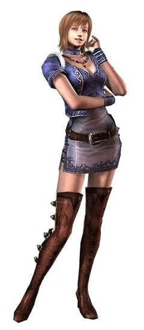
Azel
Musuh utama Gene yang menyebut dirinya Devil Hand. Dia menggunakan
tangan kiri God Hand untuk kejahatan.
Latar Belakang Azel
Saat dijodohkan dengan Olivia Azel mencuri tangan kiri God Hand,lalu
dia membunuh klannya sendiri dan bergabung dengan organisasi jahat
yang bernama Four Devas
DIKARENAKAN SHINJI MIKAMI TIDAK MEMBUAT LATAR BELAKANG UNTUK FOUR DEVAS SAYA HANYA AKAN MEMBERI TAHU TENTANG FINAL FORMNYA
Elvis
Elvis adalah salah satu anggota dari Four Devas dia adalah Boss
pertama yang akan di lawan oleh pemain,sebelum melawan Elvis pemain
harus mencari tiga kunci di kediaman Elvis
Form
Elvis memiliki form iblis yang memiliki mulut besar di perutnya dan
di kedua tangannya yang dapat menyemburkan api
Ini adalah final form dari Elvis-memiliki damage yang sangat besar
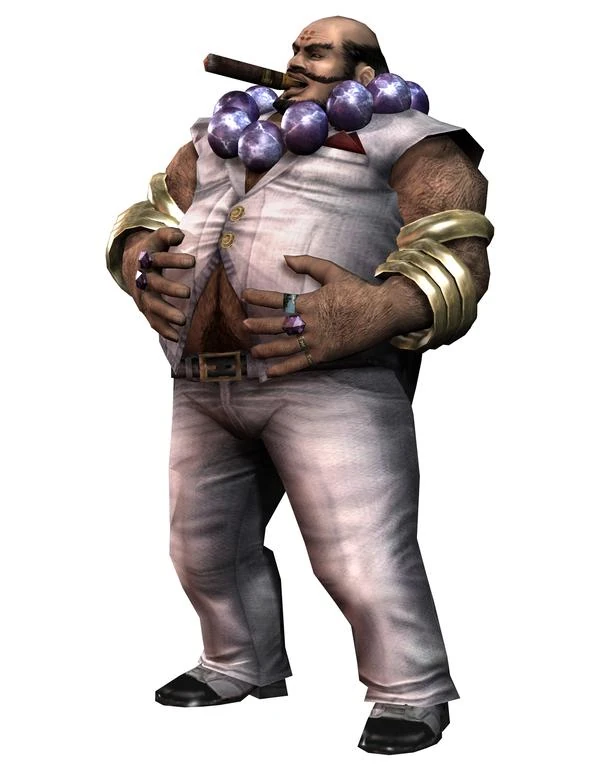
Shannon
Shannon satu-satunya wanita dari Four Devas dia sangat suka membuat
manusia menjadi peliharaannya
Form
Shannon memiliki form setengah badan bagian bawahnya berubah menjadi
entitas yang aneh, memiliki bentuk kaki seperti T-Rex dan kepala
seperti tanaman karnivora
Ini adalah bentuk akhir Shannon, gabungan tubuh wanita dan monster
menyerupai tanaman pemakan daging.
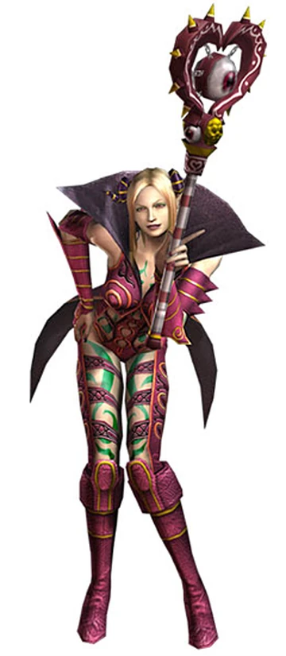
Bezel
Bezel adalah pemimpin dari Four Devas
Form
Bezel memiliki damage lebih besar daripada Elvis dan Shanon saat
pertama kali bertemu, dia akan langsung menggunakan final formnya
atau wujud iblisnya yaitu Lalat dengan wajah manusia.
Ini adalah bentuk akhir Bezel dalam wujud iblis — seekor lalat
dengan wajah manusia. Bentuk ini muncul saat pertemuan pertama
dengan pemain.
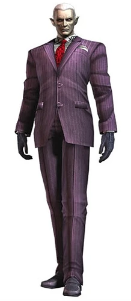
Angra
Angra adalah Boss terakhir di game God Hand selama ini dia
menjadikan Azel sebagai wadah ke bangkitannya
Latar Belakang Angra
Angra adalah malaikat yang jatuh dari surga karena kesombongannya
dia di buang ke neraka yang dimana membuatnya menjadi penguasa atau
raja iblis.Dia lah penyebab para iblis datang kedunia dan dia ingin
membalaskan dendamnya ke pada suatu entitas yang bernama God karena
sudah membuangnya dari surga
Mini Boss
Mr Gold & Mr Silver
Mr Gold & Mr. Silver (金さん＆銀さん Kin-san & Gin-san) adalah dua
antagonis minor di God Hand. Dua pria homoseksual yang bekerja di
bawah Elvis sebagai pemimpin kelompok tari yang bermusuhan. Mereka
adalah bos pertama yang ditemui dalam permainan
The Mad Midged Five
Lima pria cebol berpakaian ala Super Sentai (seperti Power Rangers)
dengan warna berbeda.Mereka sering dianggap sebagai mini boss fan
favorite karena keunikannya, dan mereka mewakili gaya khas God Hand:
campy, over-the-top action dengan sentuhan komedi aneh.Setiap warna
memiliki simbol kartu.
Merah menggunakan simbol J (Joker)
Biru menggunakan simbol Spade (Sekop)
Kuning menggunakan simbol Diamond (Wajik)
Hijau menggunakan simbol Club (Keriting)
Pink menggunakan simbol Heart (Hati)
Dr Ion
Dr Ion adalah sebuah Robot ilmuwan yang di rancang untuk mengalahkan
Gene Dr Ion memiliki tiga tipe serangan berbeda.Serangan pertama
hanya menggunakan tangan kosong yang bisa menyetrum pemain,serangan
kedua mengubah tangan kanannya menjadi bor,dan serangan ketiga
mengubah tangan kanannya menjadi peluncur roket. Dr Ion memiliki dua
form yang dimana form keduanya menggunakan baterai agar Dr Ion tidak
kehabisan tenaga saat bertarung
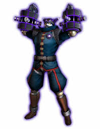
Gorilla Mask
Gorilla Mask (ゴリラーマスク Gorirāmasuku) adalah teka-teki yang
dibungkus misteri yang dibungkus enigma, tapi siapa pun lawan
misterius ini, dia menonjol bahkan di antara banyak bos aneh yang
dilawan di game God Hand.Dia memilikki gaya seperti pegulat
profesional
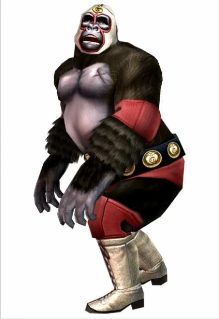
Trhee Evil Stooges
Trhee Evil Stooges ini beranggotakan Bruce,Felix,dan Conchita.Bruce
dan Felix adalah iblis yang memotong tangan kanan Gene saat
menyelamatkan Olivia dan Conchita adalah wanita yang berperan
sebagai pemimpinnya.Mereka memiliki gaya layaknya pemain circus
Great Sensei
Great Sensei adalah iblis yang memiliki gaya bertarung ala samurai
dia memiliki kemampuan menggandakan diri saat HPnya rendah
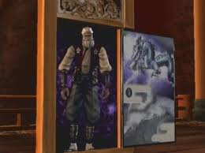
Ravael & Debussy
Ravel & Debussy (ラヴェルとドビュッシー Ravu~Eru to Dobyusshī)
adalah sepasang musisi jahat yang asal usulnya tidak diketahui yang
muncul untuk menghentikan Gene mencapai Elvis dan mungkin juga
mengambil tangan Kanan God Hand darinya.
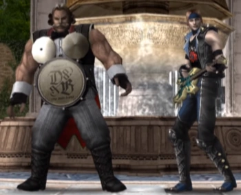
Aniki
Aniki (兄貴 Aniki) adalah kakak laki-laki Ravel, dan sub-bos
tersembunyi di God Hand. Aniki hanya akan muncul jika pemain
memeriksa Ravel setelah mengalahkannya dan Debussy, dan mulai
menyerang Gene untuk membalas kekalahan saudaranya
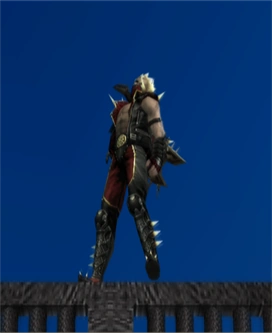
Specters
Specters (悪霊 Akuryō) adalah spesies yang ditampilkan dalam God
Hand, dan merupakan musuh elit yang akan muncul setelah mengalahkan
musuh tertentu. Specters, tidak seperti musuh lainnya, tidak ditemui
melalui cara biasa, dan sebaliknya akan bangkit dari musuh yang
tumbang, baik itu peluang acak atau musuh tertentu. Ada empat jenis
specters yang berbeda, yang semuanya sangat kuat, dan semuanya
memainkan peran utama dalam permainan. Semuanya memiliki jumlah HP
yang tinggi, ditunjukkan oleh health bar khusus mereka. Specters
ini, selain memiliki kekuatan yang luar biasa, mereka dikenal karena
kecepatan mereka yang tak tertandingi, mereka memiliki skill unik
"flash step" untuk menempuh jarak yang jauh alih-alih berjalan atau
berlari seperti musuh normal. Specters mampu melangkah cepat untuk
melepaskan diri dari serangan Gene jika diserang dengan serangan
counter attack, serta bergerak di belakang Gene dan mencoba
menangkapnya. Meskipun mereka membutuhkan refleks yang lebih tinggi
dan bahkan rasa prediksi terhadap gerakan dan serangan mereka,
counter attack, kelemahan mereka, secara alami memungkinkan
kerusakan besar untuk ditangani. Spectre juga memiliki animasi
kematian yang unik, di mana mereka berubah menjadi hitam pekat lalu
hancur dan meledak saat dikalahkan, dan biasanya meninggalkan hadiah
besar, yang dapat berkisar dari sejumlah besar emas, buah penyembuh
tinggi, atau bahkan Kartu Teknik.
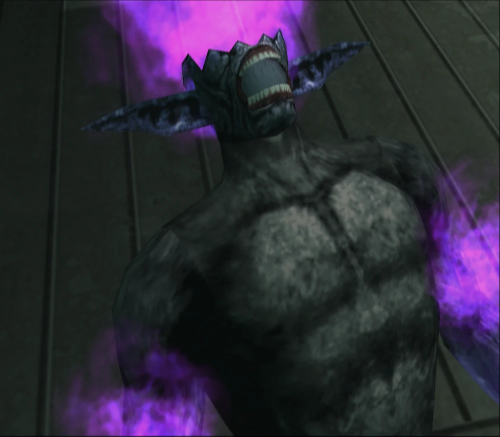
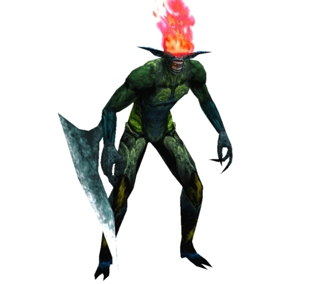
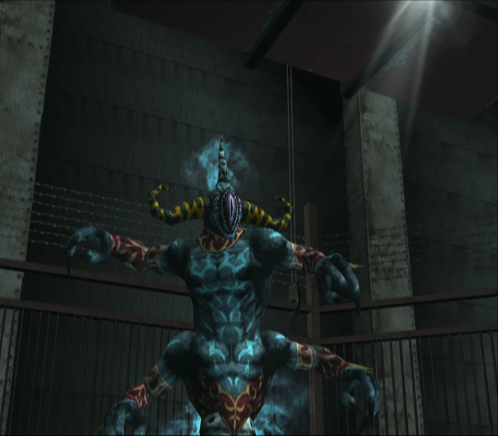
Fakta Tambahan Seputar God Hand
Meskipun God Hand tidak meraih kesuksesan komersial besar saat
perilisannya, game ini justru menjadi cult classic karena gayanya yang
nyeleneh, sistem bertarung bebas yang kompleks, serta humornya yang
absurd. Banyak pemain menyebut game ini sebagai salah satu pengalaman
aksi yang paling unik dan “gila” di era PlayStation 2.
Clover Studio — developer game ini — dibubarkan tak lama setelah
perilisan. Beberapa anggotanya kemudian mendirikan PlatinumGames, studio
di balik game seperti Bayonetta dan
Metal Gear Rising.
Hingga kini, God Hand dianggap sebagai salah satu game tersulit dan
terlucu yang pernah dibuat Capcom.God Hand memiliki outro yang
menarik,dimana semua karakter dari game tersebut menari bersama sama.
Kombinasi
Dalam God Hand ada beberapa kombinasi tehnik yang dapat di gunakan untuk
melawan para iblis.Berikut rekomendasi tehnik kombinasinya
Jab of God
Godly Straight
God Hook
Chin Music
Godly Chop
God Uppercut
Kombinasi di atas dapat di gunakan saat pemain berhasil menyelesaikan
game God Hand,namun masih ada kombinasi untuk awal game
Sugar Gene Combo
Straight
Hook
Short Uppercut
Punch Rush
Stinging Bee
Jab
Chin Music
Straight
Hook
Short Uppercut
Punch Rush
Straight
Jab
Right Hook
Uppercut
Tripple Side Kick
Spinning Backfist
Kombinas ini dapat di gunakan oleh para pemain yang baru bermain
God Hand
Roullete
Dalam game God Hand terdapat tehnik yanf memiliki damage yang sangat
besar yaitu Roullete.Roullete dapat di gunakan saat para pemain
memilikki Orb jumlah Orb dapat mengeluarkan beberapa jenis Roullete.
Satu Orb dapat mengeluarkan tehnik Roullete berwarna Kuning
Dua roullete dapat mengeluarkan tehnik berwarna Ungu
Tiga Orb dapat mengeluarkan tehnik berwarna Merah
Jika Orb pemain hanya ada satu kebanyakan pemain God Hand menggunakan
Roullete
Ball Buster
Chain Yanker
Jika pemain memiliki dua Orb kebanyakan pemain akan menggunakan Roullete
Cressent Kick
Home Run God
Hundred Fist
Jika pemain memiliki tiga Orb biasanya pemain akan menggunakan Roullete
Shaolin Blast
Double Shaolin Blast
Double Shaolin Blast hanya dapat digunakan pada saat melawan Angra
karena, saat Angra bangkit dari tubuh Azel, Azel melepaskan tangan kiri God Hand dan memberikannya pada Gene, yang membuat Gene memiliki kekuatan penuh God Hand
Ada dua Roullete yang tidak menggunakan Orb yaitu
Grovel
Dead Pan
Dead Pan hanya bisa digunakan atau di dapatkan di Game God Hand versi
Jepang.Kedua roullete ini memiliki fungsi untuk menurunkan level pemain
jika para pemain merasa levelnya terlalu sulit.
Fanmade
Beberapa penggemar game God Hand membuat modifikasi pada gamenya dan
banyak yang memainkan game God Hand yang sudah di modifikasi itu.Ada dua
versi game yang sudah dimodifikasi oleh penggemar game God Hand agar
lebih susah dan menantang